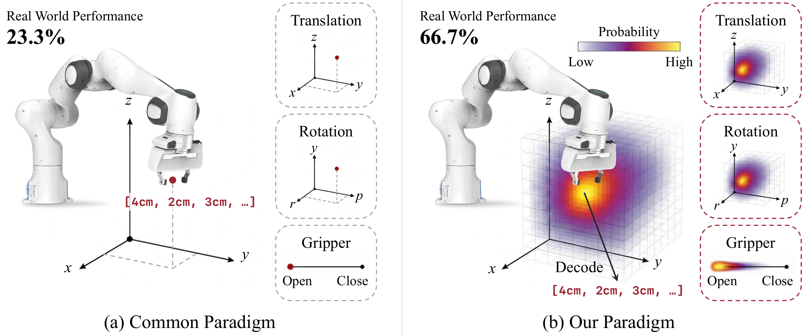
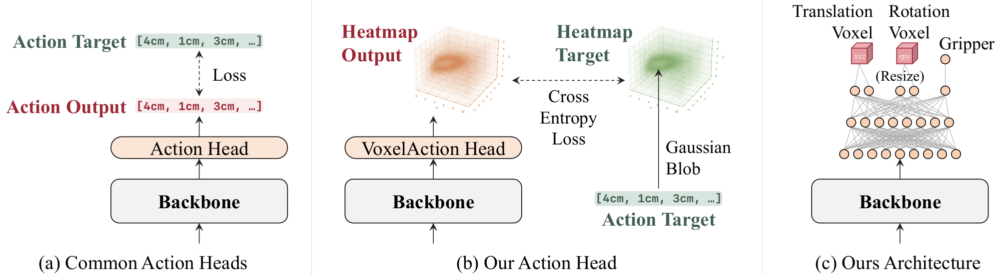
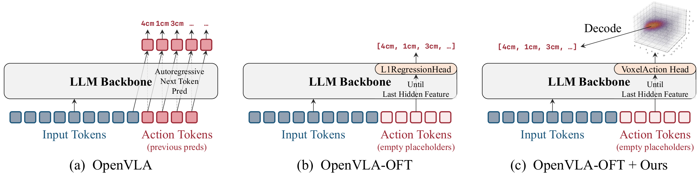

Pei Yang1,*, Hai Ci1,*, Yanzhe Chen1,*, Qi Lv1, Han Cai2, and Mike Zheng Shou1,✉
1 Show Lab, National University of Singapore 2 NVIDIA
ActionMap replaces the single-point action decoder of vision-language-action (VLA) models with a voxel action heatmap, improving success rate, data efficiency, and convergence across LIBERO simulation and real-world Franka manipulation.

Many VLAs predict each action as a single point in continuous space, whether through token bins, L1 regression, or flow matching, leaving the geometry of neighboring actions unused. ActionMap instead predicts three voxel heatmaps, over translation, rotation, and gripper, trained by cross-entropy against a soft Gaussian blob centered on the ground-truth action.

ActionMap swaps only the action decoder, so the same head drops into different VLA backbones without changing anything else. The figure below shows one such instantiation, replacing OpenVLA-OFT's L1 regression head, where each heatmap is decoded into a continuous action by hard argmax or top-k soft-argmax.

On LIBERO, dropping ActionMap into both backbones lifts the four-suite average at matched training steps, by +8.2% over OpenVLA-OFT's L1 head and +1.6% over π0.5's flow-matching head, while converging at least as fast.
The advantage widens as data shrinks. With only 10% of the demonstrations, ActionMap holds 93.2% on LIBERO-Spatial while the L1 regression head collapses to 67.2%.
On a real Franka Research 3 robot, ActionMap wins on every task at full data and reduces end-effector grasp-position error by two to three times. Below, each task pairs a heatmap rollout with its success counts, with the predicted heatmaps staying sharp and well-localized throughout the episode.
ActionMap also resolves ambiguity when more than one action is valid. For example, when an obstacle needs to be bypassed on either side, the L1 regression head averages the two modes into a middle path that hits the obstacle. Our ActionMap head instead keeps one peak per side, and the decoder could commit to either one.
@article{actionmap,
title={ActionMap: Robot Policy Learning via Voxel Action Heatmap},
author={Pei Yang and Hai Ci and Yanzhe Chen and Qi Lv and Han Cai and Mike Zheng Shou},
year={2026},
eprint={2606.06904},
archivePrefix={arXiv},
primaryClass={cs.RO},
url={https://arxiv.org/abs/2606.06904},
}